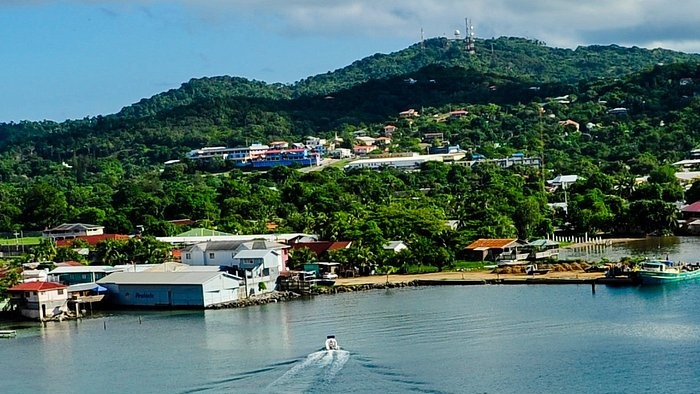

Washington
Port Townsend, Family Reunion

Mexico
Conzumel, Costa Maya, Honduras
Why Here?
Those who view my site will get to see pictures and read stories about things I love. People should come here because it's better to hear about exciting things from the source. All anyone needs to know how to do is read, and they will understand. They may also learn the names of my family members, I will have their names listed under the pictures so that nothing is confusing. Each page is designed to feature only things that occured on that specific trip so that there's no confusion.